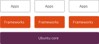

snap
Dieser Artikel wurde für die folgenden Ubuntu-Versionen getestet:
Ubuntu 16.04 Xenial Xerus
Zum Verständnis dieses Artikels sind folgende Seiten hilfreich:
Snap Apps (kurz: snaps) sind ein Paketformat, das maßgeblich von Canonical entwickelt und konfliktfrei zur "normalen" Paketverwaltung installiert und genutzt werden kann.
Ursprünglich war es vor allem für den Einsatz im Server- bzw. Cloud-Umfeld also auch für das Internet of Things gedacht, inzwischen ist es aber auch in den "normalen" Desktop-Distributionen zu finden.
Im Gegensatz zu den DEB-Paketen können in snaps alle benötigten Dateien und Abhängigkeiten, wie z.B. Binaries, Bibliotheken und Konfigurationsdateien, enthalten. Alle Dateien sind nach der Installation in einem einzigen Verzeichnis vorhanden. snaps können teilweise oder komplett aktualisiert werden. Da jede Version eines snaps in ein neues Verzeichnis installiert wird, werden keine Dateien überschrieben und die alte Programmversion bleibt komplett erhalten. So kann man bei Problemen auf einfache Art und Weise die vorherige Version verwenden ("Rollback"). Sofern ein Entwickler keine aktuelle Version seines Programms zur Verfügung stellt kann es vorkommen, dass veraltete und ggf. sicherheitsanfällige Programmteile installiert sind und verwendet werden.
Neben Snap-Apps gibt es Frameworks, welche ebenfalls als .snap-Paket angeboten werden. Diese beinhalten Ressourcen die von anderen Anwendungen genutzt werden können. Für Frameworks gelten höhere Sicherheitsrichtlinien und können nur von Entwicklern hochgeladen werden, welche für Canonical arbeiten.
snaps können aus dem zentralen Snap-Store von Canonical bezogen werden. Die Installation von lokal heruntergeladenen snaps ist aber auch möglich.
Technik und Sicherheit¶
Die Grundlage, auf der alle snaps laufen, ist das "Core OS" im Falle von Ubuntu "ubuntu-core". Um die Verwaltung etc. der snaps kümmert sich der im Hintergrund laufende Dienst snapd  . snaps sind gegeneinander abgesichert und laufen in einer Umgebung Namens "snap confinement". Ein snap kann grundsätzlich nicht auf die Daten eines anderen snaps zugreifen. Technisch gesehen sind snaps ein Image mit squashfs-Dateisystem.
. snaps sind gegeneinander abgesichert und laufen in einer Umgebung Namens "snap confinement". Ein snap kann grundsätzlich nicht auf die Daten eines anderen snaps zugreifen. Technisch gesehen sind snaps ein Image mit squashfs-Dateisystem.
Außerdem unterliegen unter Ubuntu dies snaps der Überwachung durch AppArmor. Diese verhindert unter Ubuntu und dessen Derivaten, dass snaps auf Systemverzeichnisse wie /var, /etc oder /usr zugreifen können.
Im Dateisystem werden snaps im Verzeichnis /var/lib/snapd/snaps gespeichert. Die Dateien und Verzeichnisse, welche im snap enthalten sind, werden dann unterhalb von /snap eingebunden und werden somit auch bei Eingabe von mount im Terminal angezeigt.
Slots and Plugs¶
snaps können sich mit anderen snaps über "slots" und "plugs" verbinden. Ein Slot ist dabei eine Schnittstelle, die ein snap für anderen snaps bereitstellen kann. Ein Plug (auf deutsch: Stecker) ist die Schnittstelle eines snaps, dass in den Slot eines anderen Snaps "eingesteckt" werden kann.
Installation¶
Ab Ubuntu 16.04 sind die für snap benötigten Pakete bereits vorinstalliert. Ansonsten können diese aber auch nachträglich installiert werden[1]:
snapd
snap-confine
 mit apturl
mit apturl
Paketliste zum Kopieren:
sudo apt-get install snapd snap-confine
sudo aptitude install snapd snap-confine
Benutzung¶
Der zentrale Kommandozeilenbefehl[2] ist snap, die allgemeine Syntax lautet[3]:
snap BEFEHL [OPTIONEN]
Je nach Befehl werden zusätzlich Root-Rechte[3] benötigt (z.B. zur Installation und Deinstallation von snaps).
snaps suchen¶
Mit dem Befehl
snap find SUCHBEGRIFF
werden alle im Snap-Store enthaltenen snaps, auf die der Suchbegriff SUCHBEGRIFF passt, angezeigt. Der Suchbegriff muss aus mindestens einem Buchstaben bestehen, dass Suchen z.B. mit nur * ist nicht möglich.
Mit dem Befehl snap find ist es leider nicht möglich, sich alle verfügbaren snaps anzeigen zu lassen. Dies ist aber z.B. online über die Webseite https://uappexplorer.com/snaps möglich.
snaps installieren¶
Das Installieren von snaps erfolgt mit einem Befehl:
sudo snap install SNAPNAME
So würde SNAPNAME aus dem Snap-Store installiert.
Die Installation von lokal heruntergeladenen snaps funktioniert genauso, allerdings ist hier zwingend die Option --dangerous erforderlich sofern vorher keine passende Signatur installiert wurde. Selbstverständlich sollte man dies nur tun, wenn man dem Ursprung der .snap-Datei vertraut. Um ein manuell heruntergeladenes snap zu installieren wechselt man ins Verzeichnis, in dem die Datei liegt und führt den Befehl
sudo snap install NAME_DER_SNAPDATEI.snap --dangerous
aus.
snaps aus anderen Channels installieren¶
Mit snap ist es möglich, snaps aus verschiedenen Channels (auf Deutsch: Kanälen) zu installieren - was natürlich voraussetzt, dass der Entwickler auch verschiedene Versionen seines snaps bereit stellt.
Standardmäßig wird der Channel "stable" benutzt, welche eine stabile Version des Programms enthält.
Einige mögliche weitere Kanäle sind:
sudo snap install SNAPNAME --beta #für den Beta-Channel sudo snap install SNAPNAME --edge #für den Channel mit der neuesten (nicht stabilen) Version
Eine Übersicht über alle Channels gibt der Befehl
snap install --help
snaps im devmode Modus installieren¶
Wie oben bereits beschrieben greifen bei snaps diverse Sicherheitsmechanismen. Um diese für ein snap außer Kraft zu setzen, dient die Option --devmode:
sudo snap install SNAPNAME --devmode
Wie der Name bereits sagt, ist dies interessant, wenn man eigene snaps entwickelt und sollte nicht aus Spaß gemacht werden. Verstöße gegen die Sicherheitmechanismen werden in /var/log/syslog geloggt.
--devmode impliziert --dangerous.
snaps aktualisieren¶
Der Befehl refresh aktualisiert alle snaps:
sudo snap refresh
Man kann auch gezielt einzelne snaps aktualisieren. So würde
sudo snap refresh SNAPNAME
nur den snap SNAPNAME aktualisieren. Dies funktioniert allerdings nur mit snaps, die aus dem Snap-Store installiert wurden.
installierte snaps anzeigen¶
Der Befehl
snap list
listet alle installierten snaps auf. Dabei werden standardmäßig Name, Version, Revision, Entwickler und Notizen des snaps angezeigt.
snaps deinstallieren¶
Zur Deinstallation dient der Befehl remove. mit
sudo snap remove SNAPNAME
würde der snap SNAPNAME entfernt.
Programme starten¶
Programme, die via snap installiert wurden, lassen sich normalerweise wie alle anderen Programme auch starten. Unter Ubuntu mit Unity tauchen diese z.B. in der Dash auf.
Sollte dies nicht der Fall sein - was z.B. bei snaps passieren kann, die manuell lokal und nicht über das zentrale Snap-Store installiert wurden, dann kann man auch ins Verzeichnis /snap/bin/ wechseln und das Programm dann von dort manuell starten.
eigene snaps erstellen¶
Es ist auch möglich, eigene snaps zu erstellen. Dazu dient das Programm snapcraft .

Links¶
Transactional Updates
- Erklärung, wie die Verwaltung der verschiedenen Versionen eines snaps funktioniert
- Erstellt mit Inyoka
-
 2004 – 2017 ubuntuusers.de • Einige Rechte vorbehalten
2004 – 2017 ubuntuusers.de • Einige Rechte vorbehalten
Lizenz • Kontakt • Datenschutz • Impressum • Serverstatus -
Serverhousing gespendet von